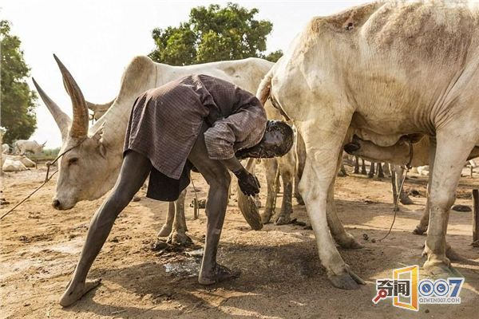
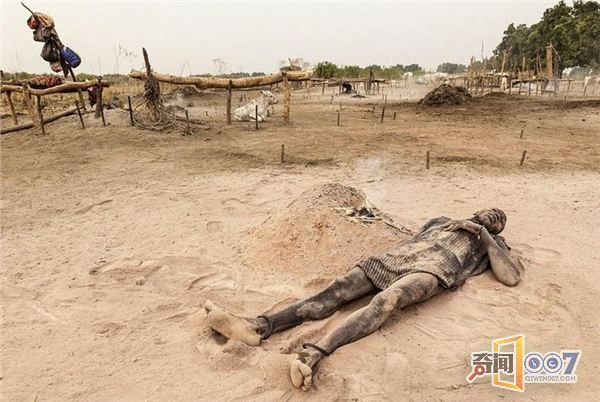
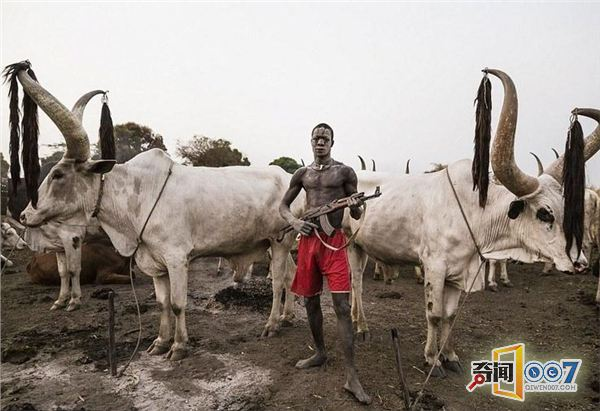
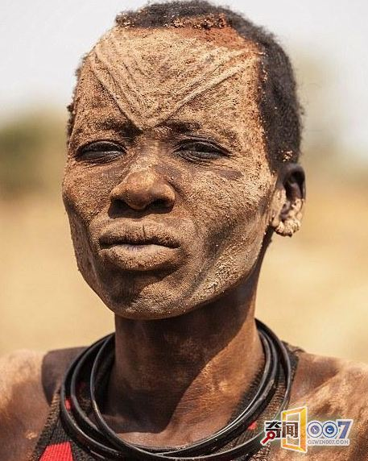
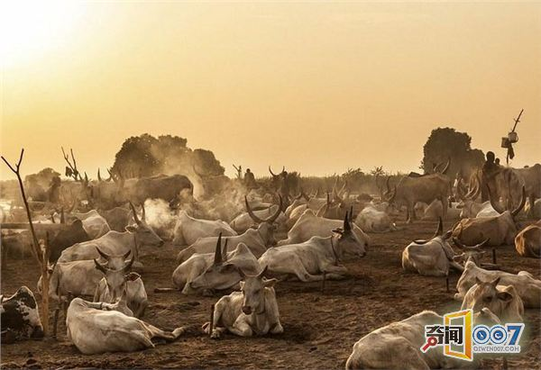

人们现在生活在一个非常文明开放的社会当中，现在的人们自然是不会和原来没有任何社会制度的原始人一样，有了属于自己的文化，自然也就有了文明的规定。人类的社会是一步步进化而来的，从最开始的时候，人类还只是像一个普通的动物一样，没有任何的不同出现，而随着后来人类不断的演化，逐渐从原始人变成了现在的模样，人们知道了更多的东西，创造了属于自己的社会，自己的文化。
虽说现在的人们早就已经将原始社会的形式丢弃，但是还是有很多的原始部落当中，仍然还是保持着一些比较原始的行为，这样的行为在现如今人们的眼中，完全没有任何存在的必要，但是在这样的原始部落当中，他们这样的生活正式经历了一代又一代人们的经验才传承到了今天，所以他们对于这样的事情都深信不疑，至今也还在保持着这样的传统。
在南苏丹有一个名叫蒙达里的部落，在这个部落当中每天都在发生着同样的一件事情，这样的事情在现代人们的心中是完全不能够接受的，但是对于这里的人们来讲，他们早就已经习惯了这样的 生活。据了解，每天早上的时候，蒙达里的人们都会专门用牛尿来冲洗他们的头部，这样就相当于他们今天一天的生活开始了；这样的事情对于人们来说，是没有办法想象到的，但是在这里人们习以为常，那么在这里为什么会有这样的事情发生呢？接下来就让我们好好的认识一下这个特殊的部落。

据了解，在蒙达里部落当中，人们用牛尿来清晰头部的原因，主要是因为在他们的眼中，牛尿能够帮助他们预防疾病，尤其是一些传染病，虽然这样的举动会让他们的头发变得枯黄，但是相比较于疾病的话，他们完全不会认为这样的举动不合理；这个传统对于他们来说，是一个绝对正确的事情，而除了这样的举动之外，他们还会用牛粪燃烧之后的灰涂抹在自己的脸上，据说这样的做法能够让他们的皮肤避免出现疾病。
因为这里特殊的生活方式，自然也是让很多的人都注意到了这个地方，曾经有专业的专家对牛粪灰进行了检查，的出来的结果是，这种牛粪灰就相当于是一种爽身粉一样的存在，能够避免人们的皮肤当中出现一些过敏的反应，而在南苏丹这个地方一直都是非常的炎热，这样的天气实际上对于人们的皮肤有着很大的伤害，而这样的做法恰好就能够保护他们的皮肤不受到伤害。
人们之所以会在任何的方面都利用牛来保护自己，不仅仅是因为这些事情在一定的程度上确实是有着科学依据，还因为在他们的生活当中，牛是一种非常重要的动物，在这个部落当中人们甚至是将牛来当做流通的货币进行交换；如果一个家庭当中饲养了牛的话，以后无论是家里需要举办任何的喜事，儿子娶亲或者是女儿出嫁，都能够当做聘礼或者是嫁妆。在他们的观念当中，所有的动物都没有牛重要，任何时候他们都需要保护自己的牛，所以在这里经常能够看到一些背着步枪的人，他们并不是因为遇到了什么危险，只是因为他们需要保护好自己家的牛而已。据了解，在这里一头牛的价格能够卖上人民币大约3200元的价格，这样的一个价格对于大部分的国家来说，并非是非常多的金钱，但是对于南苏丹这个国家来说，这样的资金对于他们来说，是相当的多了。


在蒙达里部落当中，人们将牛粪灰涂抹在自己的身上的事情，并不只是随便的涂抹，反而会专门的做一些标记，在鸡的额头的位置上，都会有专门的V形的标记；他们认为这样的牛粪灰能够帮助他们抵抗皮肤疾病的侵蚀，这里还经常会有昆虫会对人们叮咬，涂抹上了牛粪灰之后这样的情况就会减少，当然最重要的是，能够抵抗紫外线对于人体的伤害。
在这个部落当中出现这样的防护措施，实际上也能够看得出来，在南苏丹这个国家当中，人们除了这样的保护之法之外，并没有真正的现代的医学能力来保护自己，因为在这个国家就是处在一个战乱的环境当中，也因为这样的战乱，使得蒙达里部落的人们也只能在尼罗河畔生活。
在这个部落当中，人们不仅仅是利用牛粪灰和牛尿来保护自己不受到伤害，他们对于自己的 牛也是非常的保护；人们在为自己涂抹牛粪灰的时候，也会为自己的牛一起涂抹上，而当牛被放牧出去的时候，呆在家里的人也需要将牛棚清理干净，等到牛回来的时候就能够有一个舒适的环境。


